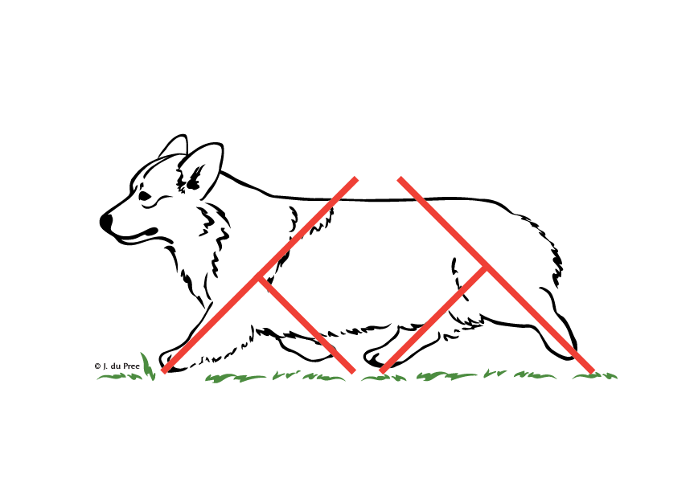

PEMBROKE WELSH CORGI
The origin of the Corgi is lost in the mists of time. It is possible to believe that, as the only herding dog indigenous to Wales, they can be traced back to 920 A.D. Certainly a Welsh cattle dog is mentioned in the 11th century Doomsday Book.
For centuries, their job was to guard and protect the cattle herds grazing the unfenced Crown common land, to keep the stock from thieves and straying. Each dog was able to recognise by scent its own stock and know the boundaries. When the day’s work was done they returned to the homestead and became a loyal companion to the children. The name Corgi is generally taken to mean ‘cur dog’, not the crossbreed application we know today, but can mean a dwarf or working dog.
General Appearance
Low set, strong, sturdily built, alert and active, giving the impression of substance and stamina in small space.
Characteristics
Bold in outlook, workmanlike
Temperament
Outgoing and friendly, never nervous or aggressive.
Head and Skull
Head foxy in shape and appearance, with alert intelligent expression, skull fairly wide and flat between ears, moderate amount of stop. Length of fore face in proportion to skull as 3 is to 5. Muzzle slightly tapering. Nose black.
Eyes

Well set, round, medium size, brown, blending with color of coat.
Ears
Pricked, medium sized, slightly rounded at the tip. Line drawn from tip of nose through eye should, if extended, passed through or close to the tip of the ear.
Mouth
Jaw is strong with perfect, regular and complete scissor bite, that is the upper teeth closely overlapping the lower teeth and set square to the jaw.
Neck
Fairly long.
Forequarters

Lower legs short and straight as possible, forearm moulded round chest. Ample bone, carried right down to feet. Elbows fitting closely to sides, neither loose nor tied. Shoulder is well laid and angulated at 90° to the upper arm.
Body

Medium length, well sprung ribs, not short coupled, slightly tapering when viewed from above. Level top line, chest broad and deep, well let-down between the forelegs.
Hindquarters

Strong and flexible, well angulated stifle. Legs short, ample bone carried right down to feet. Hocks straight when viewed from behind.
Feet
Oval, toes strong, well arched and tight, the two centre toes slightly in advance of the two outer toes, pads strong and well arched, nails short.
Tail
Previously customarily docked short. Undocked: set in-line with the topline. Natural carriage which may be above or below the topline when moving or alert. Natural bobtails may occur, when the tail can be of any length, carried above or below topline when moving or alert.
Gain / Movement
Free and active, neither loose nor tied. Forelegs move well forward without too much lift in unison with thrusting action of hind legs.

Corgis 1800s
Drovers
The documented history from photographs and etchings of the 1800s shows collie-type dogs used by the drovers (reliable men employed to see the stock arrive safely at market). But it is not beyond the realms of possibility that the Corgi, with its boundless energy and tenacity, was used prior to this time to move the stock to the markets in London and the Midlands.
Before the revolution of trains, all stock – cattle, sheep and geese – were taken on these long arduous journeys. The drovers were also tasked with carrying money across the country, therefore needed the dogs to safeguard them from highwaymen. It was common for the drovers to use lesser known routes across the mountains to avoid toll roads. Even today the traits of herding are often observed in our Corgis. The Corgis method of always working from behind and flanking to drive forward is opposite to the Border Collie, which works as a gatherer. They worked by nipping the soft part of the cattle’s heel while being agile and low to ground ensured they missed the inevitable kicks! With the advent of fencing and the coming of the railways to transport stock quickly to markets, the need for the drover’s dog diminished, but the inherited behaviour is still there and the indomitable spirit and character lives on though many generations have passed.

Kennel Club Registration
In the late 1920s, two ladies became aware of the Pembroke. Barbara Douglas-Redding (Wolfox) and Thelma Gray (Rozavel) popularised the breed by making trips to Wales to bring dogs back to England.
The breed owes a great deal to the Rozavel Kennel for the improvements made to the type suitable for the show ring. The Welsh Corgi Club was the first club formed in Haverfordwest in 1925 to serve both Pembroke and Cardigan; it is still in existence today. The first show with Challenge Certificates was held at Cardiff, with the CCs being won by a litter brother and sister both just over six months of age. The bitch, Shan Fach, was Best of Breed and became the first champion. Both breeds competed together and occasional mixed matings occurred, the types having similarities unlike recent times when the breed differences were more marked. Many of the Pembroke type were born naturally short tailed and this trait continues in several bloodlines. Over time, the two varieties became recognisable by the tail length, with the majority of Pembrokes being docked until the ban in 2007. It wasn’t until 1934 that The Kennel Club granted them separate breed status. In the early 30s it was noted by Thelma Gray and Barbara Douglas-Redding that, in no small measure due to the Royal princesses having a puppy, they were becoming increasingly popular with the general public. Therefore, to promote the breed, they decided to form the Welsh Corgi League. The first meeting took place in Surrey in 1938. This quickly grew in strength and became the worldwide club, and although numbers of members have dropped in recent years it is still considered to be the principal Pembroke club. Over the ensuing years with popularity increasing other regional breed clubs came into being. Due to the tenacity and dedication of Thelma and Barbara, a recognisable type was quickly established. This in particular is down to Ch Rozavel Red Dragon, who, was a very potent sire, stamping his many qualities on his winning progeny. The onset of war put paid to shows and breeding programmes. As the Pembroke was a small and easy-to-keep dog, and with the commitment of breeders, several important bloodlines kept going. The heyday of Pembrokes was the 60s and 70s when numbers in the ring far exceeded those exhibited today. At that time, many people jumped on the bandwagon and the temperament suffered from indiscriminate breeding. Families returning from a trip to Wales often came home with a Corgi bought for a few pounds at the farm gate. Today’s Pembrokes have changed to be heavier boned, bigger and with the glamorous coat required for the ring. The temperament is also greatly improved. From the long history of the little farm dog from Wales, there is still the healthy, happy, bright character to be found enjoying whatever life has in store.